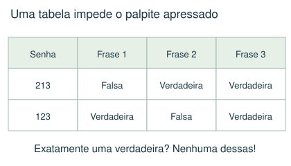
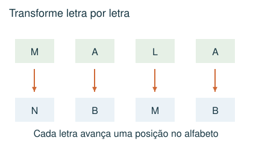
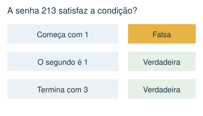
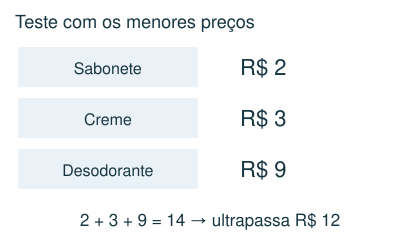

1 Intermediário
A senha usa 2, 3 e 5, uma vez cada. Exatamente uma frase é verdadeira: “o primeiro algarismo é 2”; “o segundo não é 2”; “o terceiro não é 5”. Qual das senhas abaixo serve?
- A) 235
- B) 253
- C) 352
- D) 523
Meu raciocínio
CAPÍTULO 08 · MATEMÁTICA · 6º ANO
Eliminar possibilidades e justificar a escolha.
1. Observe → 2. Entenda → 3. Resolva → 4. Confira
OBSERVE E COMPREENDA · 1

Faça uma lista curta de condições. “Exatamente uma” não significa “pelo menos uma”. Para cada candidato, marque verdadeiro ou falso em cada pista; elimine aquele que descumprir qualquer condição obrigatória. Em senhas, separe “algarismo presente” de “posição correta”.
Use tabela de possibilidades, uma linha por candidato. Comece pelas pistas que proíbem mais opções. Depois de achar uma resposta, volte a todas as pistas. Uma solução que funciona pode não ser a única; continue verificando se a pergunta exigir unicidade.
Se três vogais precisam ficar juntas numa ordem fixa, trate-as primeiro como um bloco. Depois posicione as demais letras. Em mapas, regiões que compartilham uma fronteira não podem repetir a cor quando essa é a regra; um ponto de encontro isolado não é necessariamente uma fronteira. Em torneios, equipes que aparecem juntas no palpite de vencedores de jogos simultâneos não podem ter se enfrentado nessa rodada.
OBSERVE E COMPREENDA · 2

Substitua símbolos por valores usando uma tabela. Em códigos de letras, teste avanço e recuo no alfabeto e a posição da letra na palavra. Uma equivalência deve preservar a sequência inteira, não apenas o conjunto de símbolos. Em códigos com datas, respeite meses de 01 a 12 e os dias válidos de cada mês.
Quando uma compra precisa custar menos de um limite, teste o item suspeito com os menores preços dos outros produtos. Se até essa soma ultrapassa o limite, o item é impossível. Para xícaras ou recipientes, use somas das capacidades e restrições sobre quantos recipientes contêm cada líquido.
VAMOS RESOLVER JUNTOS · 1
Uma senha usa 1, 2 e 3, uma vez cada. As frases são: “começa com 1”; “o segundo algarismo é 1”; “termina com 3”. A senha 213 é permitida se exatamente uma frase deve ser verdadeira?

Não. A primeira frase é falsa, mas a segunda e a terceira são verdadeiras. Duas frases verdadeiras violam a regra.
VAMOS RESOLVER JUNTOS · 2
Sabonetes custam R$ 2 ou R$ 4; cremes R$ 3 ou R$ 5; desodorantes R$ 6 ou R$ 9. Para comprar um de cada com até R$ 12, qual desodorante é obrigatório?

O de R$ 6. Mesmo com os outros itens mais baratos, o de R$ 9 levaria a 2 + 3 + 9 = R$ 14. Com o de R$ 6 há compra de R$ 11.
AGORA É COM VOCÊ
Registre suas contas no caderno ou imprima esta página. Explique como chegou à resposta.
A senha usa 2, 3 e 5, uma vez cada. Exatamente uma frase é verdadeira: “o primeiro algarismo é 2”; “o segundo não é 2”; “o terceiro não é 5”. Qual das senhas abaixo serve?
Num código, cada letra é substituída pela seguinte no alfabeto, sem acentos. Como fica a palavra MALA?
A senha tem 3 algarismos distintos e não começa com zero. Pistas: nenhum de 4, 2, 9 aparece; em 479 há exatamente um algarismo da senha, fora de posição; em 756 há exatamente um, na posição correta; em 543 há exatamente um, fora de posição; em 268 há exatamente um, na posição correta. Qual senha atende a tudo?
Um produto A custa R$ 2 ou R$ 4; B custa R$ 3 ou R$ 5; C custa R$ 6 ou R$ 9. Você compra um de cada e gasta menos de R$ 12. O que é obrigatório?
Use dia e mês com dois algarismos. A soma dos quatro algarismos de uma data é 20. Em qual mês essa data pode ocorrer?
CONFERIR TAMBÉM É APRENDER
Abra cada resposta depois de tentar resolver.
D) 523. Em 523: a primeira é falsa, a segunda é falsa e a terceira é verdadeira. As outras opções têm duas ou três frases verdadeiras.
C) NBMB. M vira N, A vira B, L vira M, A vira B. Resultado NBMB.
B) 738. 4,2,9 são excluídos; 7 está na senha, mas não no meio. Em 756, 7 ocupa corretamente o início e 5,6 são excluídos. De 543 sobra 3 fora da última posição; de 268 sobra 8 no fim. Logo 738.
A) Escolher C de R$ 6. Com C de R$ 9, até a combinação mais barata custa 2 + 3 + 9 = 14. Com C de R$ 6, a combinação 2 + 3 + 6 = 11 é possível.
D) Setembro. A maior soma dos algarismos de um dia válido é 11, no dia 29. O mês precisa somar pelo menos 9; entre 01 e 12, só 09 chega a 9. A data 29/09 soma 20.
Estas questões originais trabalham o tópico. Os recortes incluem resoluções publicadas.